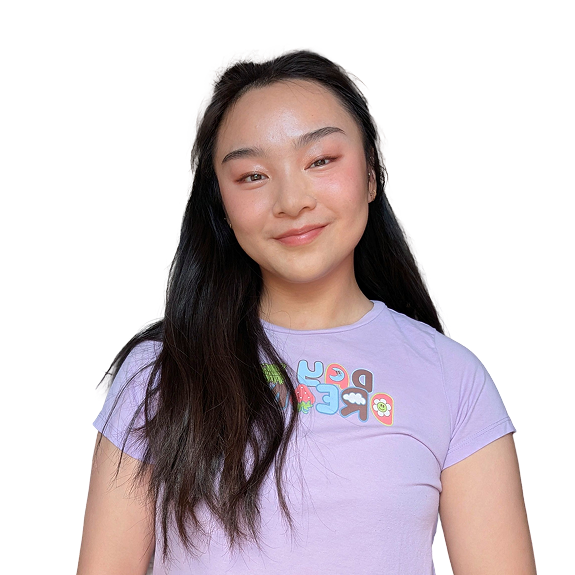

Hi, I'm Vikki!
I am a creative technologist who strives to use code and electronics to create memorable, enriching, and amusing experiences,
as well as interpersonal connections.
I also have experience in UI/UX research and design, web development, and professional photography.
Want to reach out? Shoot me an email at vikkiw123@gmail.com or message me on LinkedIn.
Some fun facts about me:
- I'm currently getting my MS in Creative Technology and design at CU Boulder's ATLAS Institute.
- I am a lifelong musician, and I love incorporating music and rhythm into my work. I am also in a community acapella group, and I write arrangements!
- I prefer my eggs sunny side up, the runnier the better.
- I once laid down on a road to see if the dashed lane lines were really 10 feet long. It was in the middle of the night on a rural road, and yes, they really are that long.
- I strongly believe that the ideal hike should end in a body of water, like a lake or a waterfall.
- I have been a portrait photographer since 2019! Check out my work here.